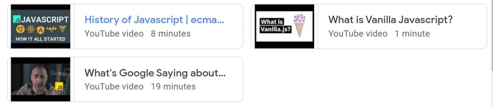

My Review on EcmaScript

History of JavaScript
☛ Brendan Eich developed JavaScript at Netscape Communications in 1995. Netscape and Eich created JavaScript as a scripting language for use with Netscape Navigator, the company's main web browser.
What's Google Saying about JavaScript in 2021?
☛ The movie focuses on the patterns of different languages throughout a certain time period, with Python standing out as the language that truly jumps out. It claims that python is the most popular and has had the most recent searches between 2004 and 2015.
What is Vanilla Javascript?
☛ Vanilla javascript is one of the lightest frameworks ever created. It is extremely simple and easy to understand as well as utilize. Using the vanilla script, you may develop important and influential apps as well as websites.